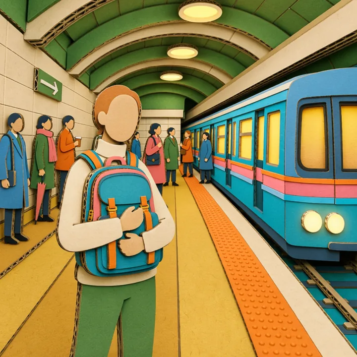
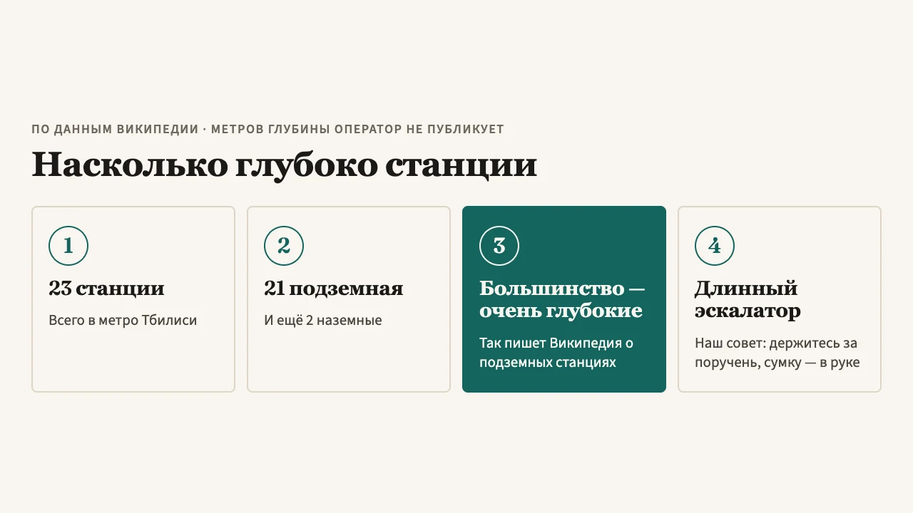

- Линии
- 2
- Станции
- 23
- Длина
- 27,3 км
- Проезд
- 1 лари / 90 минут
- Часы (по справочнику)
- 06:00–00:00
- Экстренный номер
- 112
Статья входит в «Путеводитель по Грузии».
Схема метро Тбилиси на русском: линии и станции
Линий две, пересадка одна. Ниже — схема без улиц. Карта метро Тбилиси с улицами есть в приложении TTC: там линии наложены на план города.

Линии. По данным Википедии, на линии Ахметели — Варкетили (с 1966 года) 16 названий, на Сабурталинской (с 1979 года) — 7. При открытии в 1979 году Сабурталинская линия была длиной 5,8 км. Английское название — Tbilisi Metro. Русские названия на схеме — наш перевод английских: русской версии сайта у TTC нет.
История. Первый участок в 6,5 км связал «Дидубе», «Электродепо», «Октомбери» (теперь «Надзаладеви»), «Вокзальную площадь», «Марджанишвили» и «Руставели». По данным Википедии, это был четвёртый метрополитен в СССР. Последним открыли «Государственный университет» — 16 октября 2017 года.
Планы. В сентябре 2025 года мэр Тбилиси объявил проект: удлинить первую линию с обоих концов — к Варкетили и к Глдани, сообщало Общественное вещание Грузии (1TV). Сроков в сообщении нет.
Пересадка: Вокзальная площадь
Перейти с линии на линию можно только здесь. В списке Википедии это «Вокзальная площадь 1» на линии Ахметели — Варкетили и «Вокзальная площадь 2» на Сабурталинской.
Станции метро Тбилиси: что рядом с главными
В таблице — то, что пригодится приезжему. Линия 1 — Ахметели — Варкетили, линия 2 — Сабурталинская.
Про маршрутки от «Дидубе» — в статье «Маршрутки в Грузии».
Сколько стоит метро в Тбилиси и как платить
Проезд в метро стоит 1 лари, и этот платёж открывает 90 минут поездок без ограничений: на метро, в автобусах, микроавтобусах и на канатной дороге Багеби — Университет. Платят Metromoney или банковской картой. Если платить через приложение или наличными в автобусах с кассой, 90 минут не действуют.
Про бумажные билеты и жетоны тариф TTC не говорит. Цены — по странице тарифов TTC с датой 3 июня 2019 года; 20 ноября 2026 года она открывалась с теми же цифрами.

Metromoney: где купить, пополнить и вернуть
Metromoney (в русской транскрипции — Метромани) стоит 2 лари. Её продают в кассах метрополитена и в экспресс-отделениях Bank of Georgia. Она не именная, документы не нужны.
Пополнить её можно в тех же кассах, в экспресс-автоматах Bank of Georgia и сервисных центрах. Остаток показывает турникет.
Вернуть её можно в течение месяца: по чеку вернут стоимость.
Потеря и поломка. Восстановить её после потери или поломки можно только по чеку. Повреждённую бесплатно меняют в центрах замены карт («problem card») на «Авлабари» и «Медицинском университете»; при механическом повреждении придётся снова платить её цену. Туда же идут заявить о потере.
Рике — Нарикала. Купить и пополнить её можно и на канатной дороге к крепости, но поездка там стоит отдельно — 2,5 лари в одну сторону. Про подъём — в статье «Тбилиси».
Наш совет. Чек храните не с мелочью, а рядом с паспортом: только по нему вернут деньги и выдадут замену.
Можно ли платить банковской картой
Да: TTC принимает разные банковские карты. Списка банков на страницах тарифа мы не нашли, о российских банках и «Мир» там ничего не сказано. Подойдёт ли ваша, спросите у своего банка.
Наш совет. Даже если планируете платить банковской, в первый же день купите и пополните Метромани — с ней турникет не станет сюрпризом.
Проездные и штраф за безбилетный проезд
Безлимитные проездные продают только на абонемент — у TTC это называется subscription card: день — 3 лари, неделя — 20, месяц — 40, 3 месяца — 100, полгода — 150, год — 250. Льготы (10 и 20 тетри, бесплатный проезд) — для тех, кто зарегистрирован, учится или работает в Тбилиси; туристов в этом списке нет.
Штраф на городском транспорте TTC — 5 лари, если оплатить его за 30 дней; оспорить его можно за 10 дней. Не 50 лари сразу: 50 — только при просрочке.
Как пользоваться метро в Тбилиси: по шагам
Оплатите вход, а линию меняйте на одной пересадке.
- Купите Metromoney в кассе и сохраните чек — или платите банковской.
- Metromoney приложите к турникету: на нём виден остаток.
- Линию меняйте на «Вокзальной площади».
- Пока действует оплаченное время, пересаживайтесь на наземный транспорт без новой оплаты.
- Маршрут стройте в Journey Planner на сайте transit.ttc.com.ge. В приложении TTC есть расписания маршрутов, они открываются офлайн.
По данным Википедии, по линиям ходят модернизированные советские вагоны 81-717/714 и Еж3. TTC собирается закупить новые.
Автобус № 337 и наземный транспорт по тому же тарифу
Тот же тариф — 1 лари за 90 минут — действует в наземном транспорте TTC. На схеме линий аэропорта нет; от зала прилёта в центр ходит городской автобус № 337 по тому же тарифу. Подробнее — в статьях «Аэропорт Тбилиси» и «Тбилиси».
До скольки работает метро в Тбилиси
По справочнику Национальной администрации туризма Грузии, время работы — ежедневно с 06:00 до 00:00. Это общий справочник, а не расписание TTC. По данным Википедии, первые поезда выходят чуть раньше 6:00, а интервал — от 2,5 минуты в час пик до 12 минут поздно вечером.
«До 02:00» — разовый случай. С 19 по 22 марта 2026 года, в дни похорон Католикоса-Патриарха Илии II, метро по решению мэрии работало до 02:00, сообщало Общественное вещание Грузии (1TV).
Поздний вечер и если опоздали на последний поезд
Последние поезда уходят около полуночи. GOV.UK — сайт правительства Великобритании — советует в незнакомых районах после темноты соблюдать обычные меры предосторожности и держать телефон заряженным; это общий совет по Грузии, не про метро. Демонстрации у Парламента на проспекте Руставели, особенно субботними вечерами, могут нарушать работу транспорта. Подробнее — в статье «Безопасно ли в Грузии».
Наш совет. Если возвращаетесь после 23:30, ещё днём проложите в Journey Planner запасной путь домой по земле.
Час пик и карманники: безопасно ли в тбилисском метро
В целом да. Правительство Канады пишет: «Автобусы и тбилисское метро в целом безопасны и надёжны, но карманники могут выбирать туристов».
GOV.UK считает уровень преступности в Грузии низким. Но в людных местах советует беречься карманников, не оставлять вещи без присмотра и следить за обстановкой. Там, где толпа, случаются кражи из карманов и выхватывание сумок. Много наличных лучше не носить, документы — держать в надёжном месте.
Наш совет. Ценное разложите ещё на эскалаторе: телефон — во внутренний карман, наличные — в два-три места. В вагоне в час пик перекладывать вещи неудобно.

Глубина и длинные эскалаторы
Глубина метро в Тбилиси в метрах — такой цифры мы у оператора не нашли. По данным Википедии, большинство станций очень глубокие, поэтому почти везде спуск — по длинному эскалатору. Из 23 — 21 подземная и 2 наземные. Деление подземных на 17 глубоких и 4 мелких там дано без ссылки на источник, поэтому мы на него не опираемся.

Планы. В июле 2024 года Европейский банк реконструкции и развития (ЕБРД) сообщил о реконструкции 12 станций вместе с TTC: лучше свет и вентиляция, энергоэффективные эскалаторы. Отдельно, по данным Википедии, есть план 2022 года: на «Вокзальной площади» заменить 3 эскалатора, ещё 36 в сети модернизировать, срок — 2029 год. Это разные проекты.

Наш совет. Подъём долгий. Если с вами ребёнок или пожилой спутник, встаньте ступенью ниже него, и оба держитесь за поручень. Тяжело долго стоять — не спускайтесь в час пик. Это совет, а не правило TTC.
С детской коляской, чемоданом или в инвалидной коляске
Официального перечня, где есть лифты, мы не нашли — перед поездкой спросите у сотрудников метро. По данным Википедии, на «Гоциридзе» после реконструкции в марте 2023 года появились новые лифты и тактильные дорожки, а к 2029 году под колясочников планируют приспособить 11 из 23.
В остальной сети доступность пока в планах. В июле 2024 года в TTC говорили, что проект реконструкции с ЕБРД учтёт людей с инвалидностью. Национальная администрация туризма Грузии называет лифты у фуникулёра и канатной дороги к Нарикале, а о метро на странице доступности не пишет.
Если в метро стало плохо: 112, звонок по-русски
Это единый номер экстренных служб Грузии с 2012 года: полиция, пожарные и спасатели, скорая, круглосуточно. Среди языков операторов есть русский, а ещё грузинский, английский, азербайджанский, армянский и турецкий. Русской версии сайта у службы нет, но звонок по-русски примут.
- Угрожают или напали — попросите полицию.
- Что сказать: где вы (например, «Авлабари», в сторону «Варкетили»), что случилось, какая служба нужна, имя и фамилию.
- Глухим и слабослышащим: есть видеозвонок и текстовые сообщения.
- Связь: телефон должен быть в зоне покрытия Magticom, GeoCell или Beeline.
Наш совет. Сохраните в заметках телефона адрес жилья латиницей — продиктовать его оператору будет проще. Нет сигнала на платформе — поднимитесь наверх.
При угрозе жизни — сначала 112. Если можно подождать, врача найдите в каталоге врачей и клиник Тбилиси на 100doc.ge. Как вызвать помощь по шагам — в статье «112 в Грузии».

Это справочная информация, а не медицинская консультация: лечение назначает врач.
Частые вопросы
Есть ли метро в Тбилиси и когда его построили?
Сколько станций и веток в тбилисском метро?
Сколько стоит проезд в тбилисском метро?
Как оплатить метро в Тбилиси: можно ли банковской картой?
До скольки ходит тбилисское метро и со скольки открывается?
Какой штраф за безбилетный проезд?
Есть ли метро до аэропорта Тбилиси?
Источники
- Tbilisi Transport Company: план взаимодействия с заинтересованными сторонами, 2024 (PDF) (на английском) ↑
- Tbilisi Transport Company: нетехническое резюме, 2020 (PDF) (на английском)
- Tbilisi Transport Company: история (на грузинском) ↑
- Tbilisi Transport Company: о компании (на английском)
- Tbilisi Transport Company: тарифы (на английском) ↑
- Tbilisi Transport Company: тарифы (на грузинском) ↑
- Tbilisi Transport Company: Metromoney (на английском) ↑
- Tbilisi Transport Company: льготный проезд (на английском) ↑
- Tbilisi Transport Company: контроль оплаты (на английском) ↑
- Tbilisi Transport Company: Journey Planner и расписания и приложение (на английском) ↑
- Национальная администрация туризма Грузии: часы работы (на английском) ↑
- Национальная администрация туризма Грузии: доступность (на английском) ↑
- Правительство Канады: советы путешественникам, Грузия (на английском) ↑
- GOV.UK: Грузия, безопасность (на английском) ↑
- GOV.UK: Грузия, где получить помощь (на английском) ↑
- Служба 112 Грузии: о службе (на английском) ↑
- Служба 112 Грузии: языки, звонки для глухих, покрытие (на английском) ↑
- ЕБРД: реконструкция станций метро Тбилиси, 2024 (на английском) ↑
- Общественное вещание Грузии (1TV): продление первой линии, 24.09.2025 (на английском) ↑
- Общественное вещание Грузии (1TV): работа до 02:00, март 2026 (на английском) ↑
- Аэропорт Тбилиси: автобус № 337 (на английском) ↑
- Википедия: Tbilisi Metro (вторичный источник) (на английском) ↑
- Википедия: List of Tbilisi Metro stations (вторичный источник) (на английском) ↑
Проверено 20 ноября 2026 года.